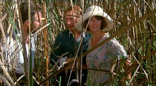

| Good Wife/ B, B- |
| MGM/1987/98/ANA 1.85/PS 1.33 |
Opens with striking landscape images and an amazing looking sky. Story is set in 1939 rural Australian lumber town Corrimandel . It's a rugged country. The men are tough and the women isolated.
 |
|
Caught in the act. ©MGM |
The core dynamic of Sonny, Marge and Sugar is very strange. Sugar is Sonny's younger brother who seems somewhat backward. But Sonny takes his responsibility for Sugar seriously.
There's a lot of subtext to this film. Underneath the surface of the characters and relationships much more is going on. Why is Sonny responsible for Sugar. Has Sugar been damaged in some way. What's the relationship between Marge and her mother. Does boredom drive Marge to drown in obsession? What motivated Marge to tempt the fates of her marriage.
It's a very quiet film that feels like it will explode at any moment.
It's not easy to understand Marge's obsession for Neville. Yes, she's a lonely woman and frustrated and feels barren. It's something out of her control, I guess. She's powerless against the forces, the demons, changing her life. Sonny is remarkably faithful to Marge under the greatest emotional stress. While you feel he will loose it completely, he surprises you at every turn. Sexual hunger drives the film forward relentlessly. This is one torrid flick. Disaster is waiting around every corner. The tension builds like a heart beating faster and faster until it's about to burst.
It's unusual to see Sam Neill playing a slick lothario from the big city. Sporting a mustache, Neill looks a bit of the dandy. There's a twinkle in his eye and a leer on his mustachioed lips.
The score is almost oriental in flavor. It's foreboding within being melodramatic. Quite pure. The music are quite effective in commenting on the action without being overbearing and obvious.
There are a number of washed out images with blown out flesh tones. A trifle soft. Fairly grainy, but even and stable. There's a strange look about the film with the number of washed out images. Colors are somewhat washed out in places but it's related to the strange look of the film. Other than that, color saturation is quite good. Shadow detail is okay. Sound is open and airy.
Reviewed on a Sharp 9000VX DLP Projector

Selections from the
Feature Archive include articles on Akira Kurosawa,
Blonde Bimbos,
Frank Darabont,
Steven Culp,
John Herzfeld or
Vietnam: The Hollywood Pariah, and many
more....
The Bitch Brigade

A line-up of lean-lipped actresses who marched through Hollywood
in a high heeled goose step armed with razor sharp dialogue. Click on the
image to read all about them.


Mystery writer Fred Hunter digs into classic films on DVD. Check out his
insightful reviews at
The Classics on DVD.
 The
Cinematheque is a cultural,
arts organization that programs year-round specialty film series at the
newly renovated, landmark 1922
Egyptian Theatre on
Hollywood Boulevard!
The
Cinematheque is a cultural,
arts organization that programs year-round specialty film series at the
newly renovated, landmark 1922
Egyptian Theatre on
Hollywood Boulevard!

You won’t want to miss the online iF Magazine. You may have guessed iF
stands for independent film.

Cyber Theater is an outstanding source for accurate video
information. Check out their 16 x 9 format guide for a thorough
understanding of DVD encoded that way.

Charade/A,B

Successfully combining romantic comedy and suspense is no small achievement.
Charade does it with panache.